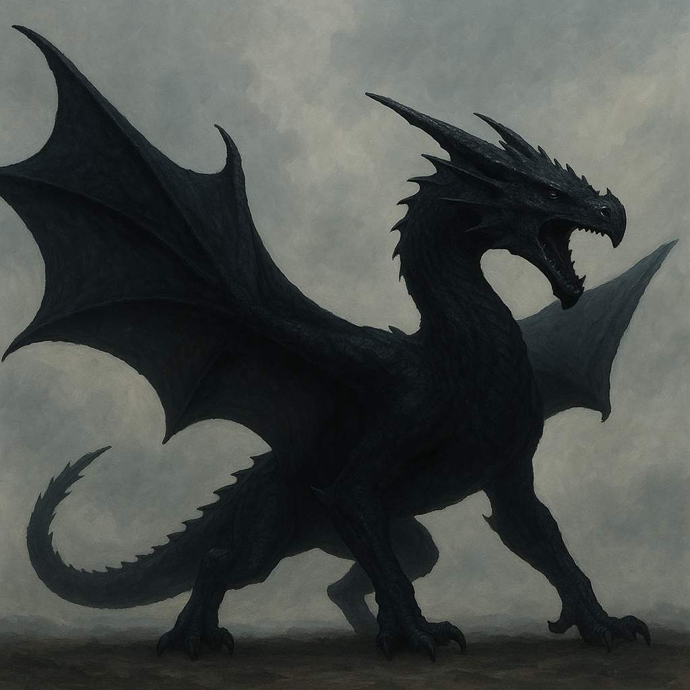
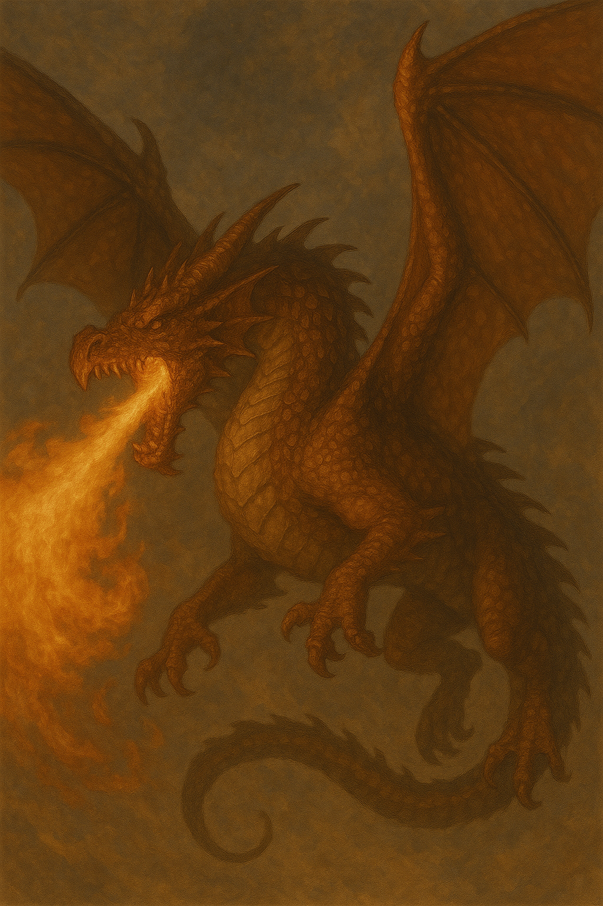
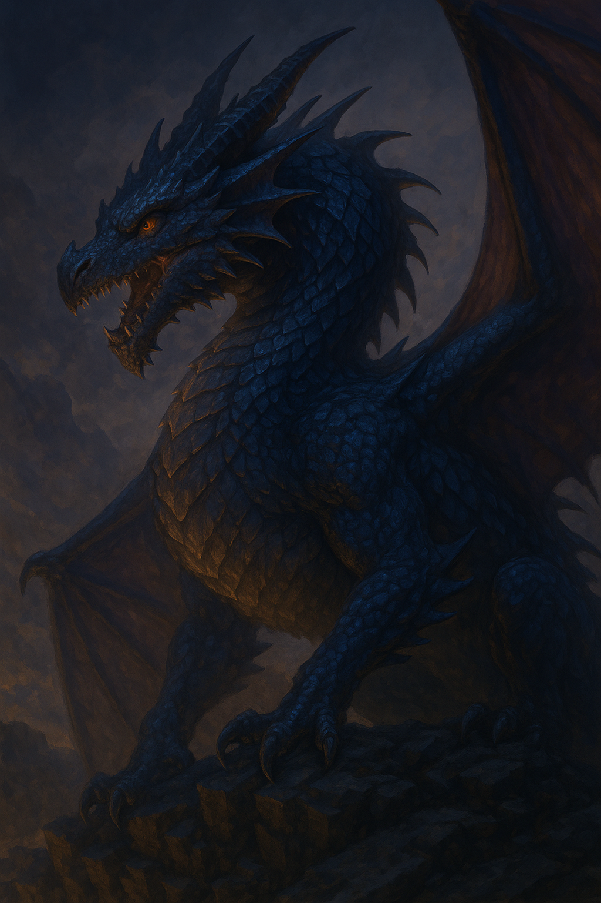

Origin
Before time settled into a rhythm and stars had names, there were the Astral Drakes—primordial dragons woven from the remnants of the first fire and the last breath of the void. According to ancient celestial manuscripts hidden in the ruined Temple of Cinderglass, these dragons were not born, but ignited—sparks from the friction between chaos and order.
They did not dwell in caves or mountains, but soared through the seams between dimensions, singing the universe into structure. Each beat of their wings formed elements, and every roar echoed as thunder in the newborn skies.
The Eight Broods
Scholars speak of eight Broods, each aligned with a cosmic element:
- Vorthyx, the Flamebinder – Father of volcanic dragons; his breath seeded the molten hearts of planets.
- Mirellan, the Tidelord – Her scales shimmered with oceans yet to exist; she birthed the tides by weeping into the void.
- Skatheir, the Wind-Shaper – A serpentine storm who taught birds to fly and gods to fear the sky.
- Dravon, the Earthdreamer – A behemoth who sleeps beneath mountains; his dreams are earthquakes.
- Nyxael, the Starlit One – Composed entirely of cosmic dust; she navigates by memory of stars no longer burning.
- Thurnix, the Hollow Flame – Keeper of spiritual fire, bringing dreams to prophets and madness to kings.
- Vehlrix, the Iron Maw – The forge-hearted war dragon, whose claws birthed the first weapon.
- Aviresha, the Wyrm of Echoes – She has no body, only voice; her whispers are said to raise the dead or unravel minds.
Each Brood shaped one layer of the world, and all were bound by the Concord of Flame, a covenant etched in the bones of the first phoenix.
The Sundering
Legend tells of a celestial war known as The Sundering, where the Broods quarreled over dominion. The clash cracked the firmament, releasing a storm of untamed magic that scorched entire dimensions. In penance, the surviving dragons scattered, retreating into hidden sanctums—beneath the ocean floor, inside dormant volcanoes, behind mirrors, or in forgotten constellations. It is said the Astral Drakes will return only when the Concord is reforged—perhaps by a mortal whose soul burns bright enough to awaken them.
Modern Echoes
In remote villages and among secretive arcane circles, whispers of the Astral Drakes persist. Some believe that dreams of dragons are not mere fantasy, but lingering fragments of Nyxael’s starlit memory, drifting into mortal sleep. The appearance of a rare crimson comet in the sky is often interpreted as a spark shed from Thurnix’s endless cycle of death and rebirth. And in certain sacred places—where no flame burns, yet a strange warmth clings to the air—it is said that the heartstone of Vorthyx still pulses, echoing with the rhythm of a world long forgotten.